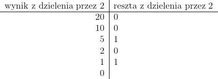
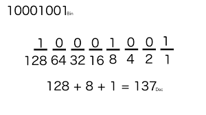
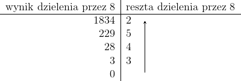
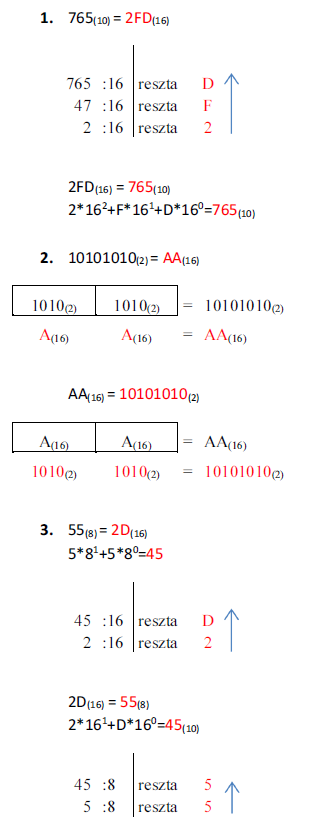

- System liczbowy
- to zbiór reguł zapisu i nazewnictwa liczb. Wyróżniamy systemy pozycyjne
(np. dziesiętny) i addytywne (np. rzymski). - System dwójkowy
- inaczej system binarny – pozycyjny system liczbowy, w którym podstawą jest liczba 2. Do zapisu liczb używamy cyfr: 0 i 1. Liczbę oznaczamy indeksem dolnym (2) (czasami (B)).
Zamiana liczby dziesiętnej na binarną
Zamiana liczby binarnej na dziesiętną
- System ósemkowy
- system oktalny - pozycyjny system liczbowy o podstawie 8. Do zapisu liczb używa się w nim ośmiu cyfr, od 0 do 7. Liczbę oznaczamy indeksem dolnym (8) lub (O).
Zamiana liczby dziesiętnej na oktalną
- System szesnastkowy
- system heksadecymalny – pozycyjny system liczbowy, w którym podstawą jest liczba 16. Do zapisu liczb, poza cyframi dziesiętnymi od 0 do 9, używa się pierwszych sześciu liter alfabetu: A, B, C, D, E, F (wielkich lub małych). Cyfry 0-9 mają te same wartości co w systemie dziesiętnym, natomiast litery odpowiadają następującym wartościom: A = 10, B = 11, C = 12, D = 13, E = 14 oraz F = 15. Liczbę oznaczamy indeksem dolnym (16) lub (H).
Zamiana liczby szesnastkowej na inne systemy
Bibliografia: http://egzamin-e12.blogspot.com/2016/12/systemy-liczbowe.html